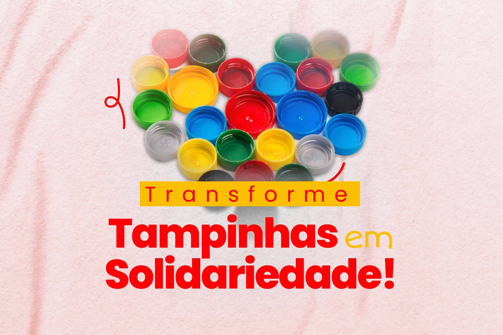

Quem Somos?
Somos o 1° ano de Desenvolvimento de Sistemas, estamos realizando um trabalho de PTIC, fazendo uma campanha para arrecadar tampinhas para entregar ao Ecopatas com o intuito de ajudar animais em situação de vulnerabilidade.
Ajude animais de rua
Juntando tampinhas plásticas de garrafas, produtos de limpeza ou de embalagens de alimentos, você financia ração, cobertores e cuidados para os animais necessitados que mais precisam de ajuda.
Projeto socioambiental
Participando da nossa arrecadação, você retira resíduos do meio ambiente, promovendo limpeza e ajudando a financiar abrigos e casas protetoras que cuidam de bichinhos vulneráveis e carentes.
Saúde animal pública
Cada quilo de tampinha plástica arrecadado e reciclado nos ajuda com animais carentes em situação de risco e vulnerabilidade, oferecendo castrações e suporte para protetores locais.
Como funciona?
Nossa campanha funciona por meio da arrecadação de diversas tampinhas que têm como propósito fornecer assistência e recursos para animais vulneráveis e em situação de rua.

Pontos de coleta
Transforme o que seria lixo em solidariedade através de um ciclo sustentável. Separe as tampinhas plásticas do dia a dia e, em vez de descartá-las no lixo, entregue-as em nosso ponto de coleta, localizado na ETEC de Guaianases.
Para onde vai?
Após a entrega, começa a fase de limpeza. O material é recolhido e higienizado para o transporte. Em seguida, as tampinhas são levadas para o Ecopatas Itaquera, onde a reciclagem contribui para ajudar animais carentes.
Onde Encontrar?
Você pode entregar as tampinhas no ponto de coleta da campanha, na ETEC de Guaianases.
Saiba das quantidades
Acompanhe o andamento das doações
Cada tampinha faz parte do nosso esforço coletivo. Queremos compartilhar com a comunidade as quantidades arrecadadas conforme a equipe registrar as doações.
Confira os registros disponíveis e filtre por período.
Ver quantidadeArrecadação de tampinhas
Selecione um período para consultar os registros divulgados pela equipe.
Ainda não há registros de arrecadação publicados pela equipe.